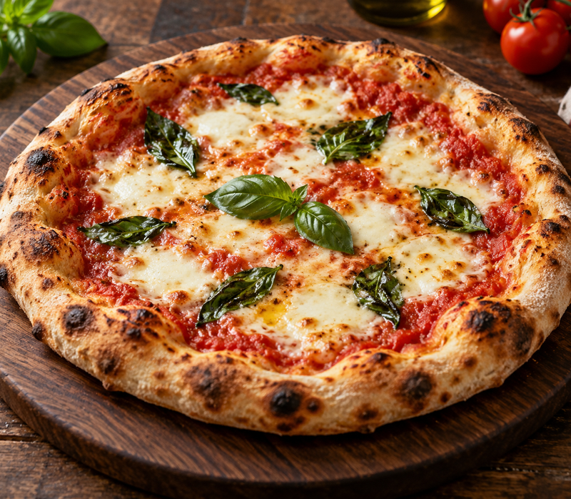

A little flour. A great evening.
Homemade Pizza
Simple dough, fresh toppings

A crisp edge, a soft middle and bubbling mozzarella: this is my idea of a good homemade pizza. Start with a simple yeast dough, then finish with tomato sauce and your favorite light toppings.
Makes two 10-inch pizzas · Serves 4
Hands-on: about 25 minutes · Rise: 60–90 minutes